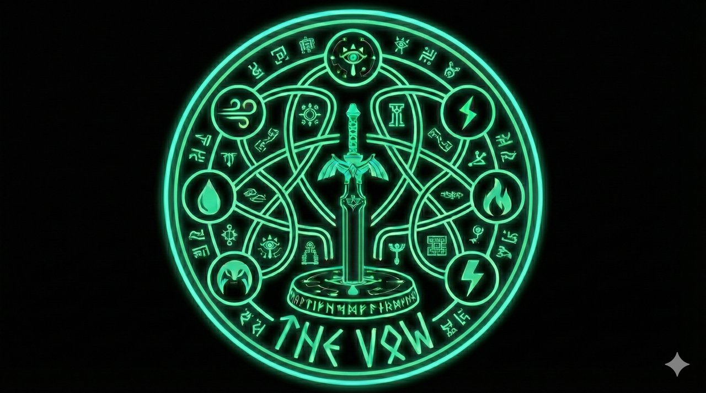

THE VOW
A Brotherhood Story

A circle without beginning, without end.

Ở Đà Nẵng, có một người anh sống như một "Link đời thật". Ở Hà Nội, có sáu người anh em mang sáu nguồn năng lượng khác nhau. Giữa họ là một vòng tròn vô hình – không có điểm bắt đầu, không có điểm kết thúc – chỉ có sự tin tưởng và lời hứa sẽ luôn dõi theo nhau.
Câu chuyện này là hành trình của bảy người đàn ông, mỗi năm chỉ gặp nhau một vài lần, nhưng mỗi lần là một lần trái tim nhắc họ rằng: đây là nhà.